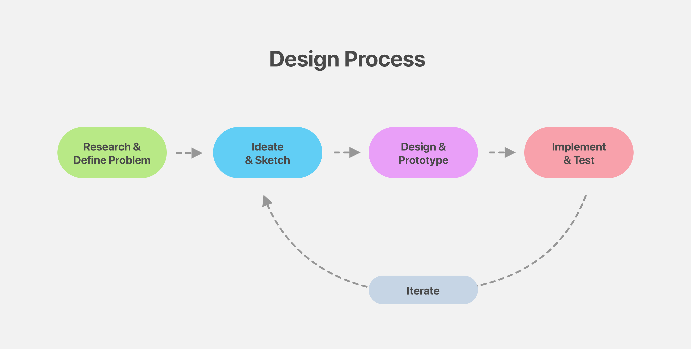
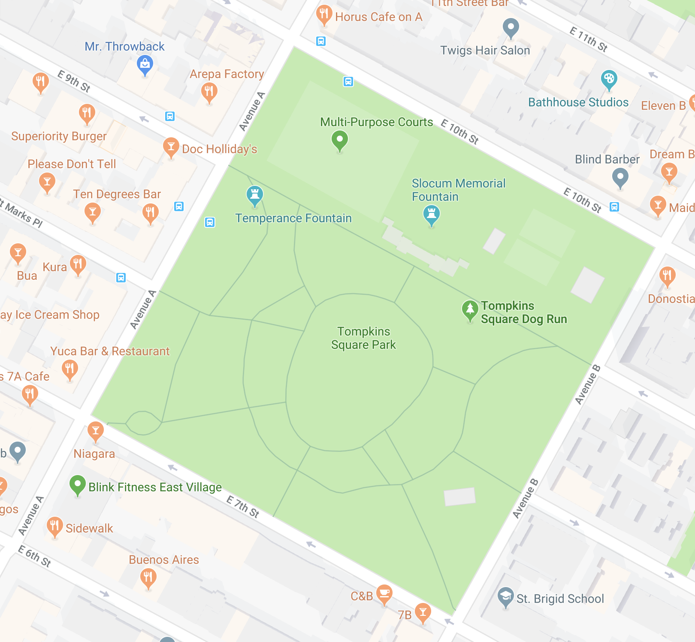
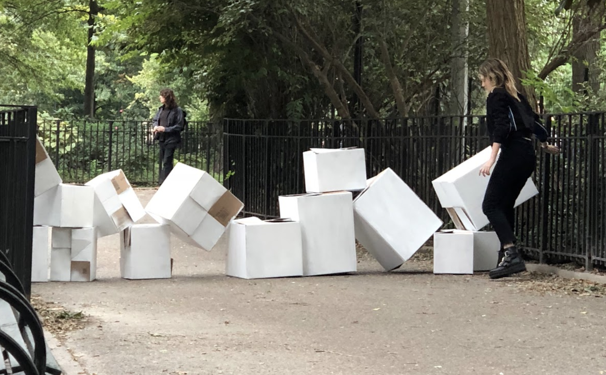
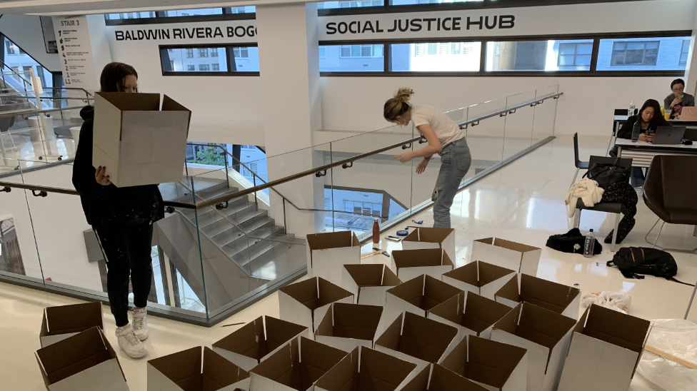
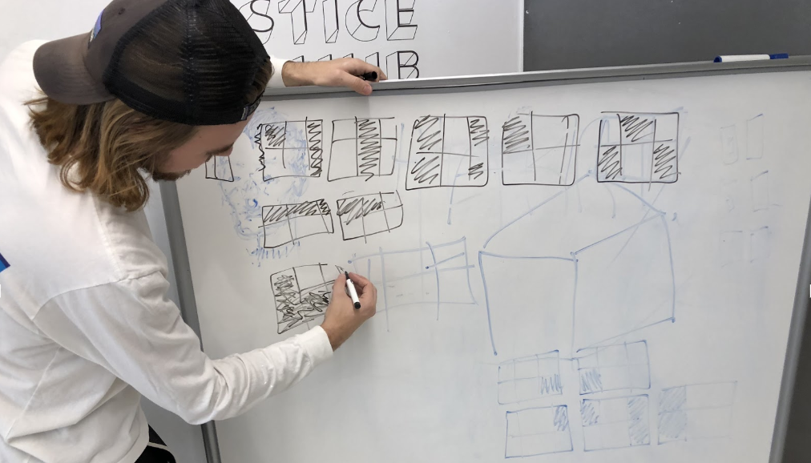
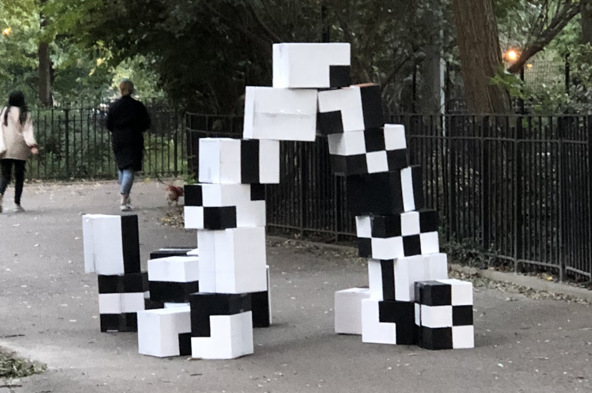

2018, NYC. Done in Collaboration with Jo Biscailuz and Brooke Smith.
How can diverting and changing movement create new and meaningful communal connections?
Meeting Place is an installation that reconnects the people within Tompkins Square Park by
deconstructing and reimagining movement through the space. Through in-situ research, ideation, and multiple
rapid prototypes, our team produced multiple iterations of our initial concept. Made up of visually striking
cardboard boxes, these playful blocks blocked, invited, and connected different communities in the park. By
creating an experience that offered structure but also participation, our participatory experience fundamentally
shifted how people moved through and engaged with Tompkins Square Park.

START: Research and Defining the Problem
Tompkins Square Park is a public park in NYC that has a unique hisotry, with a mixture
of organically formed communities, and a systematic redesign in the '70's that was geared towards
seperating groups of people from congregating.

During our own research and visits to the park, we found that specific demographics have regular and repeated habits, moving
through the park in distinct and certain ways. Furthermore, it became clear that different
communities stuck to their own, and did not commonly cross each other or use the same parts of the park.
WHAT
Discussing pain points in how people move through the park, we came to a goal:
How can we redirect people as a way of creating new connections within Tompkins Square Park?
NEXT: Protoyping and Implementing Iteration 1

Our first iteration tried to explore how forced disruption could reconnect and engage different people, connecting them together.
Whilst we felt that we were able to get people to engage with our installation, the interactions seemed forced.
Going ahead, our next iteration would find ways to create positve engagements and a larger sense of connectiveness...
NEXT: Protoyping and Implementing Iteration 2

For our second iteration,
We created a more playful but structured interactive experience by using a semi-structured grid system and puzzle-like groupings rather than a single block-aid structure.


By creating an experience that offered structure but also agency and choice for the users, our playful interactive experience fundamentally shifted how people moved through and engaged with Tompkins Square Park.

NOW: Looking Ahead